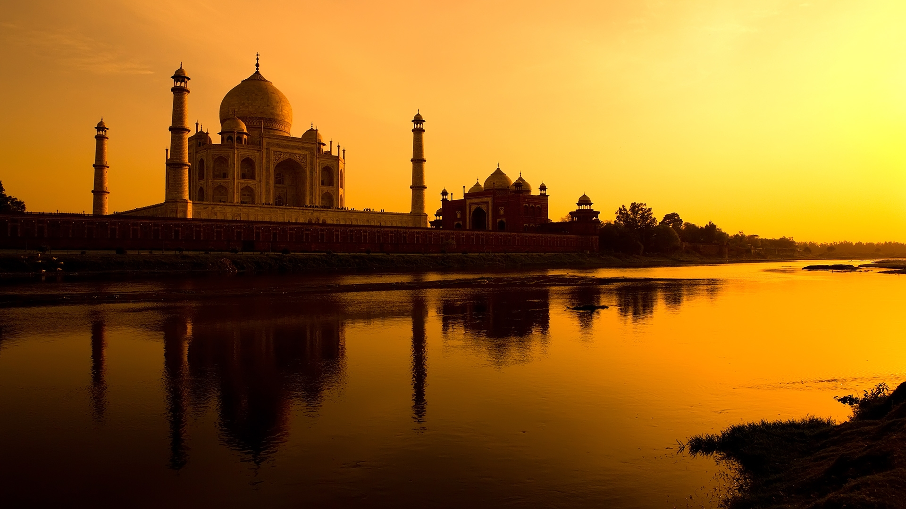
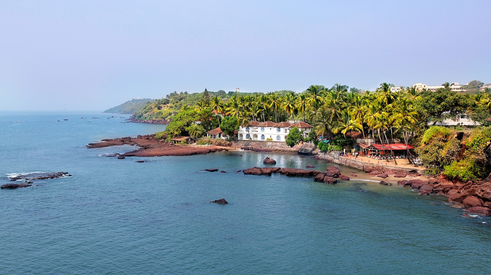
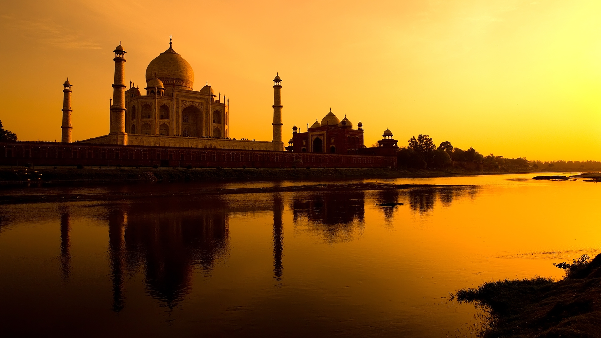
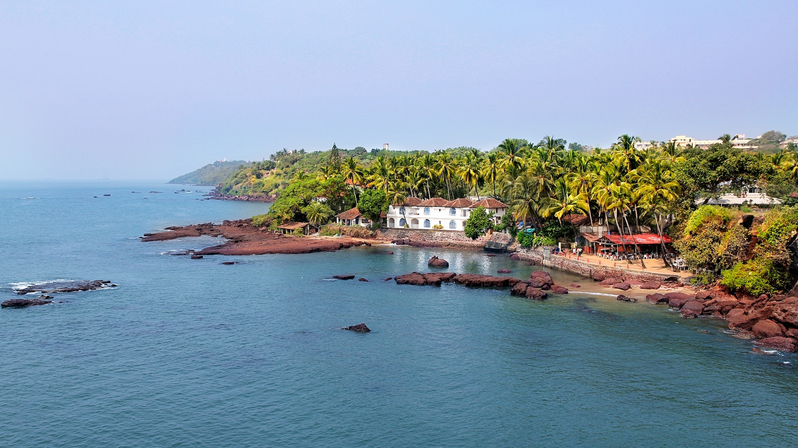

Tour Package Detailed Itinerary
| Day |
Time |
Activity |
Meals provided |
Additional Remarks |
| Day 1 |
0700hrs - 0900hrs |
A representative, who would also be your driver for the tour would be booked in advance to pick you up from Mumbai at 0700 hrs.
They are very experienced and will ensure your comfort and safety while driving cautiously. The trip fro Mumbai to Agra will take around 4 hours, in the mean time there would be 2 pit stops of 30 minutes allowance for you to get down the vehicle, stretch yourself and walk around the shophouses around the area.
|
Yes, lunch and dinner will be provided for Day 1. |
On the route to Agra from Mumbai, one would be able to see the Tomb of Akbar at Sikandra which is the tomb of Mughal emperor, Akbar and it is a very important Mughal architecture masterpiece.
It was built in 8 years, from 1605 to 1613 and is spread over 11793826 acres of land in a suburb of Agra. |
| 0900hrs - 1200hrs |
Agra is located in the northern state of Uttar Pradesh in India. Upon your arrival in Agra, a representative who is allocated to you beforehand, will meet you and bring you to the heritage site of Taj Mahal.
Taj Mahal was built by Mughal Emperor Shah Jahan in the memory of his wife Arjumand Bano Begum, also known as Mumtaz Mahal. THe construction of this beautiful white monument was started in year 1631.
There were about 22,000 workers and 1,000 elephants who took part in the contruction and was finished building in 1653, after 22 years. Taj Mahal is one of the Seven Wonders of the World an has been enlisted as a UNESCO World Heritage site.
There also has been rumours that the Emperor Shah Jahan had ordered his trusted men, to cut off the hands of the 22,000 workers who built the site to ensure that no other of its kind would be built.
Currently, there is a rough estimate of 3 million people visiting the Taj Mahal annually. Which also means that with the modern world, there is much more air pollution compared to the past, this poses a threat to the
complex because the white marbled building is being deriorated. |
| 1200hrs - 1330hrs |
Lunch, at the nearby restaurant, Taj Mahal Delicacies. Where they are very well-known for their authentic India cuisines and their cultural design of the restaurant layout.
|
| 1330hrs - 1400hrs |
The Agra Fort is about half an hour walk away from the Taj Mahal Delicacies. You will be led by foot by the representative allocated to you and they will explain more about the Taj Mahal and Agra Fort on the way.
|
| 1400hrs - 1600hrs |
Agra Fort had housed the emperors of the Mughal Dynasty till 1638, where the captical was change to Delhi. The Agra Fort is also a UNESCO World Heritage site.
The fort's colossal double walls are 20 meters hight and measured to be up to 2.5 kilometers in circumference. The fort is also surround by a moat, a protective shield incase of an attack by their enemies. |
| 1600hrs onwards |
The driver would drive you to your hotel for you to check in and wait for you to finish settling down. Before taking you to wherever you wish to go or giving their own reccommendations on places to visit in Agra. Since our representitives are also very experienced, you can trust them to introduce
scrumptious and amazing local food. You can also go to the local market of Agra to purchase souvenirs for your family and friends. The time is all yours to be free and easy, there will be no schedules to follow.
|
| Day 2 |
0900hrs - 1200hrs |
Get ready by 0900 because our driver will take you back down the road towards Mumbai and you will go into the Tomb of Akbar at Sikandra to look around. As mentoned before, Akbar' tomb is a very popular site. The tomb was built by Akbar's son prince named Salim.
The tomb had also been broken into and looted by Mughal enemies, which is very desvastating and had taken alot for the British to repair the historical monument. The Tomb has definitely gone through alot and hence, it is not a site to be missed. |
Only breakfast and lunch will be provided on the 2nd day. Breakfast will be served in the hotel. |
- |
| 1200hrs - 1330hrs |
After exploring Agra, our respresentitive will take you for lunch nearby, at a famous restaurant called the "Agra Buffet". There you can have your fill of local food because it is a buffet and would be paid for. |
| 1330hrs onwards |
Our representitive would send you back to the airport in preparation of your flight at 1600hrs. Help you to check in all of your luggages and belongings and sending you off into the departure hall before leaving. |
 


